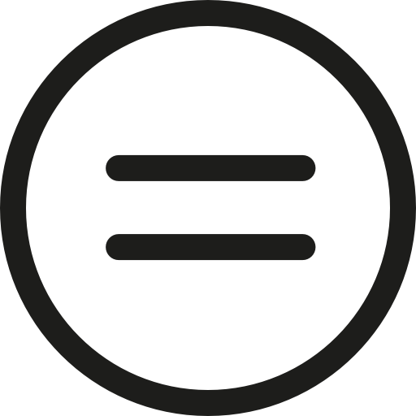
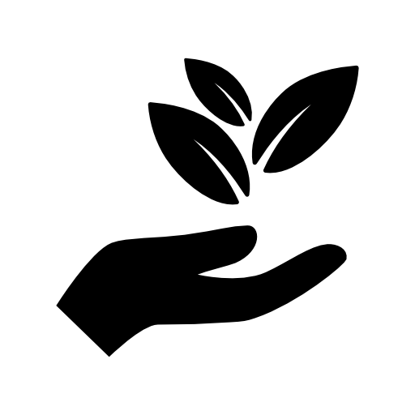
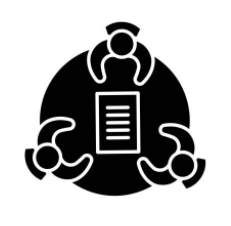
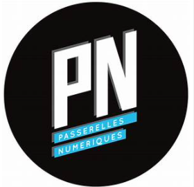
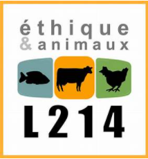
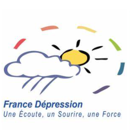
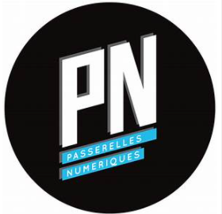
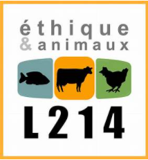
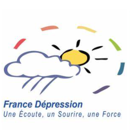

Chez ViteMesLivres, nous sommes fiers d’avoir au sein de notre équipe une parité, à l’image de nous, les dirigeants. Nous oeuvrons continuellement à promouvoir l’égalité Homme-Femme dans notre entreprise, comme le montre la note de 96/100 que nous avions obtenu cette année (2021) à l’indice de l’égalité H/F (Décret 2019-15 du janvier 2019).
Notre éthique
- Egalité Homme-Femme
- Ecologie
- diversité
Protéger notre planète est l’essence même de VitesMesLivres. Le gaspillage des livres est une catastrophe écologique qui nous avait motivé à créer notre entreprise pour activement y remédier. Nous travaillons avec acharnement à la réduction de notre empreinte carbone. C’est pour cela que nous compensons totalement les émissions de carbone générées par les livraisons et les emballages des livres achetés à travers nous. Comment ? Pour chaque émission produite par un achat expédié, nous investissons dans des projets réduisant exactement la même émission de carbone : protection de forêts qui améliorent la qualité de l’air et parrainage de fermes éoliennes et solaires générant de l’énergie propre.
Encourager le développement de la diversité éthnique et culturelle a toujours été une priorité pour ViteMesLivres. Que ce soit au sein de notre équipe ou les librairies indépendantes avec qui nous sommes partenaires, nous accueillons à bras ouverts des personnes de tous les milieux et toutes les origines. L’ouverture d’esprit est pour nous ce qui nous rend plus fort, plus empathique, et nous aide à donner chaque jour le meilleur de nous-mêmes.
Pour une responsabilité sociétale active :
ViteMesLivres s’engage à mettre en oeuvre des plans d’actions pragmatiques destinés à promouvoir le développement durable, ainsi :
- Depuis Juin 2017, Nous proposons à nos collaborateurs de mettre leur disponibilité et leurs compétences au service du monde associatif, grâce au Mécénat de compétence. Ils sont toujours grandement encouragés à participer à des missions de courte durée, sur des sujets diverses et pour le compte de structures d'intérêt général locales de secteurs variés (culturel, social, environnemental..). Pour cela, nous nous faisons accompagner par KOEO (voir Partenariat).
- Nous avons adopté dès Mars 2018 le code de conduite anti-corruption MiddleNext. Il s'agit d’un code se référant à la convention des Nations Unies contre la corruption et s’attache à lutter activement contre toutes les formes de corruption. Ainsi, il fait partie intégrante du règlement intérieur de notre entreprise, connu par tous nos collaborateurs.
- VitesMesLivres s’engage aussi pour les micro-dons sur salaire, cette solution de don participatif permet à nos collaborateurs de verser des “centimes” de leur salaire mensuel à l’association de leur choix parmis celles que nous soutenons. Cela est possible grâce à notre partenaire MicroDON (voir Partenariat).
 




